Core Java
Курс лекций. Лекция 9
@inponomarev
Streams
Появились в Java8, вместе с lambdas & method references.
Обработка конечных и потенциально бесконечных наборов данных.
Декларативный подход к обработке данных: описываем что хотим получить, а не как мы это получим.
Прозрачный параллелизм.
Преобразуем поток в поток

| (Автор анимаций — Тагир Валеев, движущиеся картинки см. здесь) |
Фильтруем

| |
Отображаем в консоль (терминальная операция)
 | |
Всё вместе в одну строку
 | |
Ничего не напоминает?
«Соединить два файла, привести их строки к lowercase, отсортировать, вывести три последних строки в алфавитном порядке»
cat file1 file2 | tr "[A-Z]" "[a-z]" | sort | tail -3Зачем это нужно?
Java 7 | Java 8 |
| |
Три категории методов Stream API
//Создание стрима
List<String> names = menu.stream()
//Промежуточные операции
.filter(d -> d.getCalories() > 300
.map(Dish::getName)
.limit(3)
//Терминальная операция
.collect(Collectors.toList());Создание стрима
//Пустого
Stream<Foo> stream0 = Stream.empty();
//Перечислением элементов
Stream<String> stream1 =
Stream.of("gently", "down", "the", "stream");
//Из массива
Stream<String> stream2 =
Arrays.stream("gently down the stream".split(" "));
//Из коллекции
List<String> strings = ...
Stream<String> stream3 = strings.stream();
//Из API
Path path = Paths.get(...);
Stream<Path> stream4 = Files.list(path);Конкатенация стримов
Stream<Foo> s1 = ...;
Stream<Foo> s2 = ...;
Stream<Foo> s = Stream.concat(s1, s2);Порождение стримов (generate)
//С помощью генератора
Stream<Double> randoms =
Stream.generate(Math::random); //ХОТЯ ЛУЧШЕ
DoubleStream doubles =
ThreadLocalRandom.current().doubles()Порождение стримов (iterate)
//Итеративно
Stream<Integer> integers =
Stream.iterate(0, x -> x + 1); //ХОТЯ ЛУЧШЕ
IntStream range = IntStream.range(0, 1000);Что будет в этом стриме?
Stream.iterate(new int[]{0, 1},
t -> new int[]{t[1], t[0] + t[1]})
.mapToInt(t -> t[0]);Spliterator: самый общий способ создания стрима
public interface Spliterator<T> {
boolean tryAdvance(Consumer<? super T> action);
Spliterator<T> trySplit();
long estimateSize();
int characteristics();
}StreamSupport.stream(Spliterator<T> spliterator, boolean parallel)Ветвление сплитераторов
Ветвление сплитераторов
Характеристики сплитератора
| Elements have a defined order (for example, a |
| For each pair of elements |
| The traversed elements follow a predefined sort order. |
| This |
| It’s guaranteed that the traversed elements won’t be null. |
| The source of this |
| The source of this |
| Both this |
Промежуточные итоги
Есть много стандартных способов порождения стримов, для простых случаев не надо "изобретать велосипед"
Скорей всего, вам не понадобится самому реализовывать
Spliterator.Быстродействия ради, есть "примитивные стримы" (три типа):
IntStream(эффективнее, чемStream<Integer>)LongStream(эффективнее, чемStream<Long>)DoubleStream(эффективнее, чемStream<Double>)
Преобразования стримов в стримы: получение «головы» и «хвоста»
//методы интерфейса Stream
//голова
Stream<T> limit(long maxSize)
Stream<T> takeWhile(Predicate<? super T> predicate)
//хвост
Stream<T> skip(long n)
Stream<T> dropWhile(Predicate<? super T> predicate)filter
| |
map
| |
flatMap
Path path = ...
Pattern separator = Pattern.compile("\\s");
try(Stream<String> lines = Files.lines(path, StandardCharsets.UTF_8)) {
//НЕ ТО, что нам надо!
//Stream<Stream<String>> streamStream =
// lines.map(separator::splitAsStream);
//ТО, что нам надо!
Stream<String> words = lines.flatMap(separator::splitAsStream);
words.forEach(System.out::println);
}
/*А также:
flatMapToDouble
flatMapToInt
flatMapToLong
*/distinct
//Внутренний Set
Stream.of(1, 5, 8, 7, 8, 5, 9, 9)
.distinct()
.forEach(System.out::println);
//Выведет 1, 5, 8, 7, 9Что произойдёт при выполнении такого кода?
ThreadLocalRandom.current().ints(1, 10)
.distinct()
.forEach(System.out::println);Программа зависнет, когда исчерпаются все значения от 1 до 10. Можно пофиксить, например, указав limit(9) после distinct.
sorted
//Внутренний отсортированный список
Stream.of(1, 5, 8, 7, 8, 5, 9, 9)
.sorted()
.forEach(System.out::println);
//Выведет 1, 5, 5, 7, 8, 8, 9, 9
//Не имеет смысла для бесконечных стримовpeek — отладочный метод
Не меняет исходный стрим.
Предназначен для «подглядывания» за промежуточным состоянием элементов.
В качестве аргумента часто используется
System.out::println.При параллельных вычислениях может быть вызван в произвольном порядке в произвольном потоке выполнения.
Stream<T> peek(Consumer<? super T> action);Терминальные операции
//Предъяви первый элемент
Optional<T> findFirst();
//Предъяви любой элемент
Optional<T> findAny();
//Проверь, удовлетворяет ли условию...
//...какой-то
boolean anyMatch(Predicate<? super T> predicate);
//...все
boolean allMatch(Predicate<? super T> predicate);
//...никакой
boolean noneMatch(Predicate<? super T> predicate);
//КОРОТКИЕ ЗАМЫКАНИЯ!forEach
void forEach(Consumer<? super T> action);В случае параллельного выполнения нет гарантий последовательности
Нет гарантий относительно того, в каком потоке будет выполнена лямбда
reduce (with identity)
|
Parallel reduce

reduce без identity
|
Готовые редьюсы
Доступный во всех стримах:
count— в общем случае требует пересчёта всех элементов!max(Comparator),min(Comparator)
Доступные в стримах примитивов:
sumaveragesummaryStatistics— count, sum, min и max «в одном флаконе».
collect: самый гибкий метод сборки результатов
Типовые параметры:
T— тип элементов стримаA— тип аккумулятора, промежуточной структуры данных, в которой всё собираетсяR— тип результата
В отличие от
reduce, работающего с иммутабельными объектами, мутирует аккумулятор.
<R, A> R collect(Collector<? super T, A, R> collector);Интерфейс Collector<T, A, R>
T— тип элементов стримаA— тип аккумулятора, промежуточной структуры данных, в которой всё собираетсяR— тип результата
public interface Collector<T, A, R> {
Supplier<A> supplier();
BiConsumer<A, T> accumulator();
Function<A, R> finisher();
BinaryOperator<A> combiner();
Set<Characteristics> characteristics();
}
//например:
class ToListCollector<T> implements
Collector<T, List<T>, List<T>>Характеристики коллектора
Characteristic | Meaning |
| Indicates that this collector is_concurrent_, meaning that the result container can support the accumulator function being called concurrently with the same result container from multiple threads. |
| Indicates that the collection operation does not commit to preserving the encounter order of input elements. (This might be true if the result container has no intrinsic order, such as a |
| Indicates that the finisher function is the identity function and can be elided. If set, it must be the case that an unchecked cast from A to R will succeed. |
Промежуточные выводы
Сделать свой коллектор непросто,
Но сила коллекторов в том, что есть много готовых и их можно комбинировать!
Наиболее употребимые коллекторы
//java.util.stream.Collectors
Collector<T, ?, List<T>> toList()
Collector<T, ?, Set<T>> toSet()
Collector<T, ?, C extends Collection<T>>
toCollection(Supplier<C> collectionFactory)
//Пример применения
Stream<Foo> myStream = ...
List<Foo> list = myStream.collect(Collectors.toList());Собирание в мапы
Collector<T, ?, Map<K,U>> toMap(
Function<? super T, ? extends K> keyMapper,
Function<? super T, ? extends U> valueMapper)
//Пример применения
Stream<Person> people = ...
Map<Integer, Person> idToPerson = people.collect(
Collectors.toMap(Person::getId, p->p);Также можно указать
mergeFunctionиmapSupplier.
Вариации на тему сборки в коллекции
с помощью
toUnmodifiable(List|Set|Map)можно сразу получить неизменяемую коллекциюtoConcurrentMapможно сразу получить потокобезопасную мапу.
Строка с разделителями
static Collector<CharSequence, ?, String> joining()
//Пример использования
menuStream.map(Dish::getName).collect(Collectors.joining(", ");
//Не забываем про то, что это же можно сделать и без стримов:
static String join(CharSequence delimiter,
Iterable<? extends CharSequence> elements)Группировки
Map<Dish.Type, List<Dish>> dishesByType =
menu.stream().collect(Collectors.groupingBy(Dish::getType));Downstream Collectors
Map<Dish.Type, Map<Dish.CaloricLevel, List<Dish>>>
dishesByTypeAndCaloricLevel =
menu.stream().collect(Collectors
.groupingBy(Dish::getType,
Collectors.groupingBy(Dish::getCaloricLevel)));Но мы можем не только группировать в цепочке!
Map<Dish.Type, Long> typesCount =
menu.stream().collect(Collectors
.groupingBy(Dish::getType, Collectors.counting()));Набор downstream collectors
/*Всё это уже есть в стримах, но нам надо применить это
к "разветвлённому" стриму.*/
/*"Терминальные"*/
counting()
summingInt(ToIntFunction<? super T> mapper)
summingLong(ToLongFunction<? super T> mapper)
summingDouble(ToDoubleFunction<? super T> mapper)
maxBy(Comparator<? super T> comparator)
minBy(Comparator<? super T> comparator)Downstream collectors—продолжение
/*С возможностью продолжить цепочку*/
filtering(Predicate<? super T> predicate, downstream)
mapping(Function<? super T, ? extends U> mapper, downstream)
flatMapping(Function<? super T,
? extends Stream<? extends U>> mapper, downstream)
/*Адаптор*/
collectingAndThen(Collector<T,A,R> downstream,
Function<R,RR> finisher)Когда может быть нужен collectingAndThen?
Map<Dish.Type, Dish> mostCaloricByType =
menu.stream()
.collect(Collectors.groupingBy(Dish::getType,
collectingAndThen( //<-----АДАПТОР
Collectors.maxBy(Comparator
.comparingInt(Dish::getCalories),
//maxBy возвращает Optional
Optional::get)));Параллельные стримы
Метод
.parallel()включает параллелизацию обработки.parallelможно вызвать в любом месте цепочки вызовов.Пользоваться надо с осторожностью, понимая ограничения и применимость.
Optional: Контейнер, который содержит объект. Или не содержит.
Цитата из книги Java 8 in Action:
"Tony Hoare, one of the giants of computer science, said in a presentation at QCon London 2009: I call it my billion-dollar mistake. It was the invention of the null reference in 1965…. I couldn’t resist the temptation to put in a null reference, simply because it was so easy to implement."
Optional<T> — как стрим из 0 или 1 элемента
//Создание
Optional.empty(); //пустой
Optional.of(x); //NPE если x == null
Optional.ofNullable(x); //пустой или с x-ом
//Расчехление
o.get();
o.orElse(other);
o.orElseGet(()->calcOther());
o.orElseThrow(()->new IllegalStateException());Optional.map
Optional<Insurance> optInsurance = Optional.ofNullable(insurance);
Optional<String> name = optInsurance.map(Insurance::getName);Optional.flatMap
Optional<Person> person = ...
//person.map(Person::getCar) вернёт Optional<Optional<Car>>!!
String insuranceName = person.flatMap(Person::getCar)
.flatMap(Car::getInsurance)
.map(Insurance::getName)
.orElse("Unknown");Optional.filter
String insuranceName = person.filter(p -> p.getAge() >= minAge)
.flatMap(Person::getCar)
.flatMap(Car::getInsurance)
.map(Insurance::getName)
.orElse("Unknown");Правила использования Optional
«Лобовое» использование Optional — хуже, чем null:
ПЛОХО | НОРМАЛЬНО |
| |
Правила использования Optional
Переменная с типом
Optionalникогда не должна бытьnull.Поля с типом
Optionalбесполезны: проверка на «непустоту» этого поля не лучше проверки наnull, цена — дополнительный объект.Не кладите
Optional-ы в коллекции.В целом,
Optional— для возвращаемых значений, а не для аргументов методов.
Когда стримы использовать не нужно
Стримы многим нравятся
Иногда люди перестают думать, и случается «стримоз»
Тагир Валеев: Используйте Stream API проще (или не используйте вообще)
Что не так?
collection.stream().forEach(...)У класса Collection уже есть метод forEach, стрим создавать не нужно.
Что не так?
collection.stream().collect(Collectors.toList())
collection.stream().collect(Collectors.toSet())/*так эффективнее*/
new ArrayList<>(collection)
new HashSet<>(collection)Что не так?
collection.stream().max(Comparator.naturalOrder()).get()/*То же самое, с меньшим количеством мусора*/
Collections.max(collection)Что хотел сказать автор?
stream.sorted(comparator).findFirst()stream.min(comparator)Как улучшить?
stream.collect(Collectors.counting())/*Коллекторы counting(), maxBy(), minBy(), reducing(), mapping(), ...
нужны лишь как вторичные в каскадных операциях groupingBy*/
stream.count()Что не так?!
collection.stream().count()/*Без пересчёта элементов один за другим!*/
collection.size()Как улучшить?
listOfLists.stream().flatMap(List::stream).count()/*Число элементов каждого подсписка известно!*/
listOfLists.stream().mapToInt(List::size).sum()Как улучшить?
stream.filter(condition).findFirst().isPresent()/*Зачем сам элемент, если надо лишь проверить наличие?*/
stream.anyMatch(condition)Как улучшить?
stream.filter(condition).anyMatch(x -> true)
stream.map(condition).anyMatch(b -> b)
stream.map(condition).anyMatch(Boolean::booleanValue)
stream.map(condition).anyMatch(Boolean.TRUE::equals)/*Замысловатые вариации на простую тему*/
stream.anyMatch(condition)Как улучшить?!
if(stream.filter(condition).count() > 0)/*В этом примере ещё хуже, чем в предыдущих,
т. к. обходится весь стрим целиком! А решение то же:*/
if(stream.anyMatch(condition))Как улучшить?!
if(stream.count() > 2)/*Нам ведь неважно, сколько их, если их больше двух?*/
stream.limit(3).count()Выводы
«Декларативный» подход к использованию стримов, «описываем что, а не как» не отменяет понимания того, как происходит вычисление.
Применять стримы надо с умом, а много где их и не надо применять.